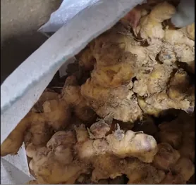
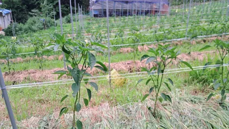

대표 사례
서울 관내 도시농업 텃밭
도시농업 텃밭에 설치·운영 · 국내 첫 도시농업 텃밭 적용
왜 퇴비차인가
화학비료도, 농약도, 비닐도 쓰지 않습니다.
출처: 서울시 친환경농장 운영 규칙
대신 손은 더 가고, 수확은 줄어듭니다.
그 빈자리를 채우는 건 흙 속에 살아 있는 미생물입니다.
퇴비차란?
퇴비차는 비료가 아니라, 흙을 살리는 물입니다
식물은 뿌리로 당을 내보내고, 미생물은 그 대가로 양분을 풀어 줍니다. 수백만 년 이어진 이 거래가 끊긴 땅에서는 비료를 더 넣어도 작물이 약해집니다.
퇴비차는 퇴비 속 유익한 미생물을 물에서 산소와 함께 깨우고 늘린 액체입니다. 땅에 뿌리면 미생물이 다시 일을 시작합니다.
물 1톤에 퇴비와 미생물(센터 배포분 또는 직접 배양분)을 넣습니다.
터보믹스가 하루 동안 산소를 불어 넣어 미생물을 깨우고 늘립니다.
완성된 퇴비차를 뿌리면, 살아난 미생물이 뿌리 곁에서 흙을 다시 일하게 합니다.
온도와 습도는 센서가 알려 줍니다. 하지만 화학비료 없이 작물을 키우는 힘은 흙 속에 살아 있는 미생물에서 나옵니다. 터보믹스는 그 미생물을 하루 만에 깨웁니다.
도입 사례
2021년부터 농가 현장에서, 2023년부터 서울 관내 도시농업 텃밭에서.
도시농업 텃밭에 설치·운영 · 국내 첫 도시농업 텃밭 적용

농가에 배포하는 미생물을 퇴비차 장치로 활성화

생산량 30% 증가

출하 기간 25일 → 20일

초기 발아율 개선

성장기~비대기 적용, 품질 향상, 2026 확대 적용

토양 미생물 활성화로 생산량 증가

유기농 비료 활용

잔디 관리 개선
※ 결과는 각 농가의 현장 관찰·기록 기준이며 토양·기후에 따라 다를 수 있습니다.
도입 안내
담당 업무에 맞춰 도입 절차와 필요한 자료를 안내해 드립니다.
터보믹스 Turbo Mixer
현재 공급 중인 1세대를 현장 의견으로 다시 설계했습니다

도시농업 텃밭과 농가 현장에서 운영 중
(세부 사양은 출시 시 공개)
마이크로 부스터 · 미생물 촉진제
퇴비차 제조와 음식물 퇴비화에 쓰는 미생물 촉진제입니다. 1kg 단위로 공급합니다.
단독 구매 가능 · 수량에 따라 견적
물 1톤에 퇴비와 마이크로 부스터 1kg을 넣고, 터보믹스로 하루 산소를 공급합니다.
서울 관내 음식물 처리 현장에 납품하고 있습니다. 음식물과 함께 섞어 퇴비화를 돕습니다.
지자체·기관 도입 안내
메일 한 통으로 시작합니다. 현장 확인부터 설치 후 관리까지 함께합니다.
텃밭 위치, 면적, 전기(220V) 여부
설치 위치·급수·전기 점검
현장 규모에 맞춰 메일로 견적을 보내 드립니다
설치 후 첫 제조를 함께 진행, 관리 담당자 교육
소모품(부스터) 공급, 점검
자료실
내부 보고용 자료가 필요하시면 아래에서 요청해 주세요.